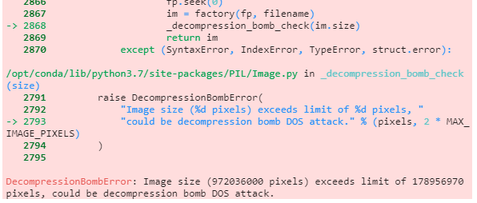
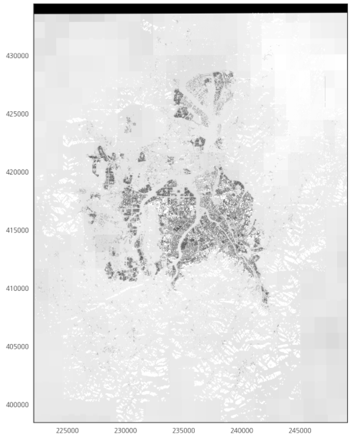
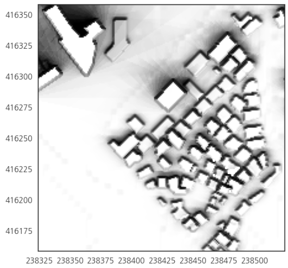
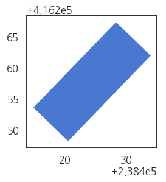
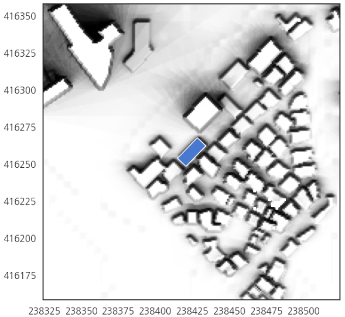

- raster map 위에 polygon을 생성하는 과정을 정리했습니다.
- 간단한 작업이지만 4 GB 용량의 raster file을 불러오는 과정과 좌표를 맞추는 과정이 중요합니다.
1. geotiff 읽기
geotiff는 지형과 건물 등 여러 정보를 담은 raster image입니다.- 건물 그림자가 담긴 geotiff 파일을 읽고 그 위에 polygon을 그리고자 합니다.
1.1. matplotlib
geotiff는 이미지파일이기 때문에imagej에서 읽을 수도 있습니다.matplotlib에서도 이미지를 다룰 수 있습니다.plt.imread()기능을 이용해 읽을 수 있지만 문제가 있습니다.

- 너무 큰 그림은 읽어들이지 못합니다.
- 심지어 DOS 공격이라고까지 의심합니다.
1.2. gdal

GDAL은 래스터와 벡터 데이터를 상호 교환하는 translator library입니다.
- ArcGIS, PostGIS를 비롯해 상당히 많은 프로그램에서 사용하는 de-facto 표준입니다.
- 그러나 왜인지 설치가 만만치 않습니다.
전에는
geopandas설치 과정에서 잘 됐던 것 같은데 새 서버에서 말썽입니다.파일을 엽니다.
1
2
3
4from osgeo import gdal
gdal.UseExceptions()
ds = gdal.Open("파일명")
2. raster data 접근
- Raster API로 파일의 데이터에 접근할 수 있습니다.
.GetDriver()로 파일의 형태를 알 수 있습니다.Driver: GTiff/GeoTIFF1
print(f"Driver: {ds.GetDriver().ShortName}/{ds.GetDriver().LongName}")
.RasterXSize와.RasterYSize로 그림의 크기를 알 수 있습니다..RasterCount로 파일에 담긴 raster band의 수를 알 수 있습니다.Size is 27001 x 36000 x 11
print(f"Size is {ds.RasterXSize} x {ds.RasterYSize} x {ds.RasterCount}")
.GetProjection()으로 사용된 좌표계를 확인할 수 있습니다.Projection is PROJCS[“Korea 2000 / Central Belt 2010”,GEOGCS[“Korea 2000”,DATUM[“Geocentric_datum_of_Korea”,SPHEROID[“GRS 1980”,6378137,298.257222101,AUTHORITY[“EPSG”,”7019”]],TOWGS84[0,0,0,0,0,0,0],AUTHORITY[“EPSG”,”6737”]],PRIMEM[“Greenwich”,0,AUTHORITY[“EPSG”,”8901”]],UNIT[“degree”,0.0174532925199433,AUTHORITY[“EPSG”,”9122”]],AUTHORITY[“EPSG”,”4737”]],PROJECTION[“Transverse_Mercator”],PARAMETER[“latitude_of_origin”,38],PARAMETER[“central_meridian”,127],PARAMETER[“scale_factor”,1],PARAMETER[“false_easting”,200000],PARAMETER[“false_northing”,600000],UNIT[“metre”,1,AUTHORITY[“EPSG”,”9001”]],AUTHORITY[“EPSG”,”5186”]]1
print(f"Projection is {ds.GetProjection()}")
3. raster data 가져오기
.GetRasterBand()를 사용해 raster data를 가져옵니다.- 제 데이터에서는
.RasterCount에서 band가 1개라고 했으니 괄호 안에 1을 넣어줘야 합니다. - 분명 파이썬 코드이지만
GDAL은 숫자를 1부터 셉니다.1
band = ds.GetRasterBand(1)
- band에 저장된 raster band data를
numpyarray로 가져옵니다. - 제가 익숙한 방식이고, 다른 데이터와 결합해야 하기 때문입니다.
- 가져온 데이터의 차원을 출력해 잘 읽혔는지 확인합니다.36000 27001
1
2
3irrad = band.ReadAsArray()
nrows, ncols = irrad.shape
print(nrows, ncols)
4. 좌표 매핑
numpyarray의 index가 0이라고 Korea Belt 2000의 좌표도 0은 아닙니다.- 2차원 배열의 좌표와 실제 지점의 좌표를 매핑해야 합니다.
.GetGeoTransform()명령으로 변환 인자들을 추출합니다.- raster band에서 가져오는 것이 아닙니다.
1
2
3
4
5x0, dx, dxdy, y0, dydx, dy = ds.GetGeoTransform()
print(x0, dx, dxdy, y0, dydx, dy)
x1 = x0 + dx * ncols # x limit
y1 = y0 + dy * nrows # y limit
222100.0 1.0 0.0 434400.0 0.0 -1.0
- 이제 raster data를 화면에 그려봅시다.
matplotlib의extent는 가로세로축에 실제 데이터값을 찍어줍니다.1
2
3
4fig, ax = plt.subplots(figsize=(20, 20))
ax.imshow(irrad, cmap="gist_gray", extent=[x0, x1, y1, y0])
ax.set_aspect("equal", "box")
plt.show()
- 위 정보를 이용해 position을 index로 변환하는 함수를 만들 수 있습니다.
1
2
3
4
5
6
7# position to index
def pos2idx(X, Y, ds=ds):
x0, dx, dxdy, y0, dydx, dy = ds.GetGeoTransform()
X_idx = int((X-x0)/dx) # x index of X coordinate
Y_idx = int((Y-y0)/dy) # y index of Y coordinate
return X_idx, Y_idx
5. Polygon 얹기
- 살펴볼 지점을 확대해서 그립니다.
- 건물들 데이터가 담긴 데이터로부터 목표 건물의 좌표를 추출하고,
- 이 건물을 중심으로 가로세로 100 pixel 범위의 그림을 그립니다.
1
2
3
4
5
6
7idx_range = 100 #pixel
fig, ax = plt.subplots(figsize=(10, 10))
ax.imshow(irrad[Y_idx-idx_range: Y_idx+idx_range, X_idx-idx_range:X_idx+idx_range],
cmap="gist_gray",
extent=[idx_x-idx_range, idx_x+idx_range, idx_y-idx_range, idx_y+idx_range])
plt.show()
- 여기에 건물을 하나 얹어봅니다.
- 중심점과 가로세로 길이, 각도를 이용해서 도형을 생성하는 기술을 사용합니다.
1
2
3
4
5
6
7
8
9
10
11
12
13
14
15
16
17
18
19
20
21
22
23
24
25
26
27
28
29
30from shapely.geometry import mapping, Polygon
import fiona
shppath = "파일 저장 경로"
def create_mor(x, y, width, height, angle, filename, shppath=shppath):
h_half = height/2
w_half = width/2
a_rad = np.deg2rad(angle)
def get_coord(h_half, w_half, a_rad):
X = x + h_half * np.sin(a_rad) - w_half * np.cos(a_rad)
Y = y + h_half * np.cos(a_rad) + w_half * np.sin(a_rad)
return (X, Y)
points = [get_coord(h_half, w_half, a_rad),
get_coord(-h_half, w_half, a_rad),
get_coord(-h_half, -w_half, a_rad),
get_coord(h_half, -w_half, a_rad),
get_coord(h_half, w_half, a_rad),
]
schema = {"geometry": "Polygon", "properties": {"id": "int"}}
savefile = os.path.join(shppath, filename)
with fiona.open(f"{savefile}", "w", "ESRI Shapefile", schema) as c:
c.write({
"geometry": mapping(Polygon(points)),
"properties": {"id": 1}
})
- 목표 건물 데이터를 읽고 사각형을 형성합니다.
- geopandas로 그린 건물은 실제 지도에 들어갈 좌표를 갖고 있습니다.
1
2
3
4
5
6
7
8
9
10import geopandas as gpd
idx_width = df_dir["OMBB_WIDTH"].loc[idx]
idx_height = df_dir["OMBB_HEIGHT"].loc[idx]
idx_angle = df_dir["OMBB_ANGLE"].loc[idx]
create_mor(idx_x, idx_y, idx_width, idx_height, idx_angle, "idx_100")
idx100 = gpd.read_file('./data/200917_shadow/idx_100/idx_100.shp')
idx100.plot()
- 이렇게 도형을 shapefile로 만들어주고
geopandas로 읽어옵니다. - 예쁘게 겹쳐져 있습니다.
